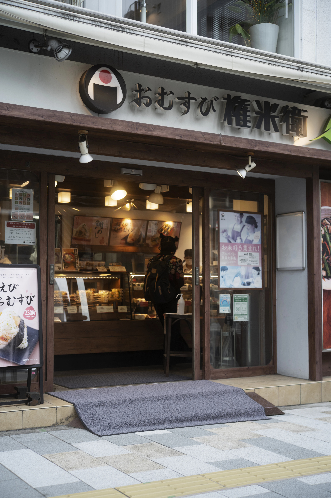
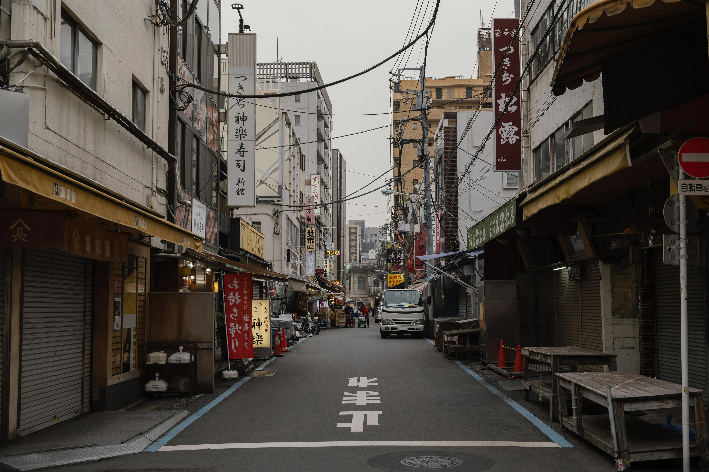

Warna Punya Cerita, Kami Bantu Ceritakan.
StarTone lahir dari kecintaan pada fotografi dan warna. Kami membangun preset Lightroom yang membantu siapa pun menghasilkan tone foto profesional hanya dalam sekali klik.
Dari Hobi Edit Foto, Menjadi StarTone
StarTone menghadirkan preset Lightroom yang dirancang untuk memberikan warna profesional dengan sekali klik. Cocok untuk content creator, fotografer, traveler, hingga pebisnis yang ingin menghasilkan foto estetik dengan cepat dan konsisten.
Setiap preset dikembangkan dan diuji langsung pada berbagai kondisi cahaya nyata, bukan sekadar filter instan, supaya hasilnya tetap terasa natural namun tetap punya karakter warna yang khas.
0
Downloads
0
Rating
Tersedia
Smartphone & PC


Kenapa Memilih StarTone?
Instant Download
Preset langsung bisa diunduh setelah pembayaran berhasil.
Mobile Ready
Bekerja mulus di Lightroom Mobile maupun Desktop.
Premium Quality
Dirancang oleh kreator berpengalaman di bidangnya.
Lifetime Updates
Update preset gratis selamanya, tanpa biaya tambahan.
Siap Menemukan Karakter Warnamu?
Jelajahi koleksi lengkap preset StarTone dan temukan tone yang paling cocok dengan gaya fotomu.
Lihat Semua Preset Hubungi Kami